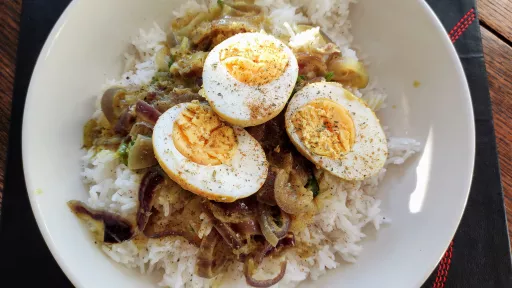

1 hr
Serves 4VegetarianDairy FreeGluten Free
Indian

This is a nice, simple vegetarian egg curry with a delicate coconut masala. The whole eggs are fried first then finished off in the curry.
Ingredients
3tbsp vegetable oil
6
free-range eggs, hard-boiled, peeled and left whole
1tsp ground turmeric, turmeric
1tsp Kashmiri chilli powder
400ml coconut milk
2medium red onions, very thinly sliced
4cm fresh root ginger, finely shredded
3
fresh green chillies, thinly sliced with seeds
½tsp salt
1tsp sugar
handful of coriander leaves, chopped
½tsp garam masala
boiled basmati rice
Instructions
Heat the oil in a heavy-based saucepan or karahi over a medium heat, add the whole eggs and fry for 1-2 minutes
, or until lightly coloured, then add the turmeric and chilli powder and cook for another 30 seconds
. Stir in the coconut milk and bring to a simmer.
Add the onions, ginger, chillies and salt, and simmer for five minutes, or until the coconut milk has reduced in volume by half and the onions are just softened, adding a splash of water if it becomes too thick. Stir in the sugar and coriander and sprinkle with garam masala. Halve the eggs, and serve with rice.